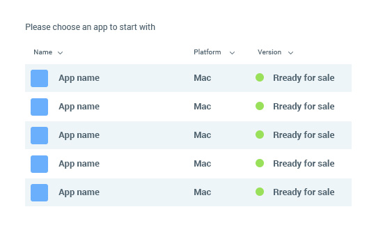
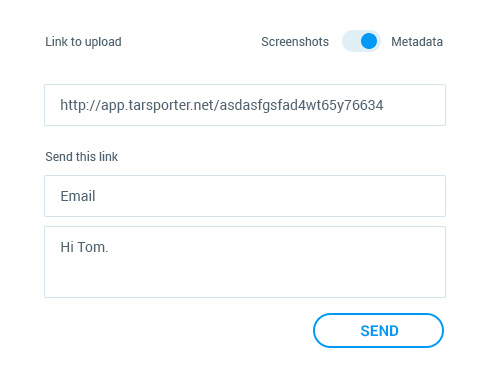
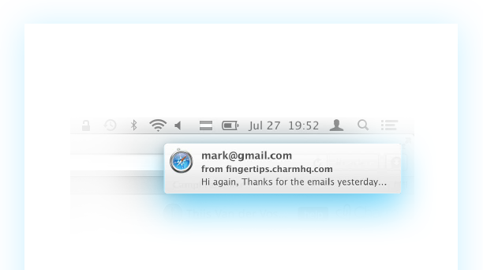

It’s all about automating the workflow
Spend less time worrying about uploading and managing your screenshots and metadata and spend more time developing and marketing your product
-
Device Detection
Transporter automatically detects the size/device your screenshots are meant for. No need to manually specify it anymore.
-
Automatic Ordering
Based on a simple number in the filename Transporter automatically orders and arranges your screenshots.
-

Different Metadata Views
Quickly want to update an URL or What’s new text in all locales? Change to the “field view” and see all the URLs from all locales.
-
Localisation Detection
Do you have a worldwide audience? Use the official ISO locale codes in the file names and Transporter can detect the localisation.
-
Upload Link
Have a designer or translator? Send them a simple link and they can upload the content. You’ll get a notification and can approve the upload to iTunes Connect.
-
File Based Metadata Upload
Do you get your apps metadata in a file? Use our simple CSV or JSON format to upload it in no time to iTunes Connect.
Save valuable
time and money
Uploading screenshots for all available device sizes and different localisations is exhausting with existing tools. Especially if you manage a lot of apps or produce regular updates. With Transporter you can save time and money uploading screenshots with on click. Spend your time developing or something else, but do not waste it with the unreliable iTunes Connect.
See how much time
you will save.
Calculate now
Zero setup time.
Upload instantly.
You don’t have to setup anything. Just login with your iTunes Connect account, select an app and startup uploading with one click. Although we do as much as we can to keep your credentials safe, we advise you to create a separate iTunes Connect account with the Marketing role.


If you are working with a designer or marketer, send them a simple link and they can upload screenshots to Transporter.
Once uploaded, you’ll get a notification and can check a preview of all screenshots. If everything is correct, just hit one button and start uploading to iTunes Connect
Reliable and independent
Just finished adding your screenshots and iTunes Connect timed out? We’ve been there. All your screenshots get saved on our servers and in case iTunes Connect is not available Transporter automatically retries to upload your screenshots. You’ll also get a notification, once all screenshots are uploaded.

Comfortable and user-friendly.
Transporter is made from developers for developers. We’ve uploaded countless screenshots and manage lot’s of apps ourselves. Therefore we wanted to make Transporter as comfortable and user-friendly as possible as we know the hassles from iTunes Connect first-hand.
Is that really everything
Transporter can?
-
Version Control
Did a great promotion a couple of months ago? Changed your screenshots but like the ones before? Go back in time with version control.
-
Version Application Control
Did a great promotion a couple of months ago? Changed your screenshots but like the ones before? Go back in time with version control.
-
Super Secret
Time-SaverMh, we could tell you something about this feature, but then we would have to … you, you know. Stay tuned and signup for our private beta.